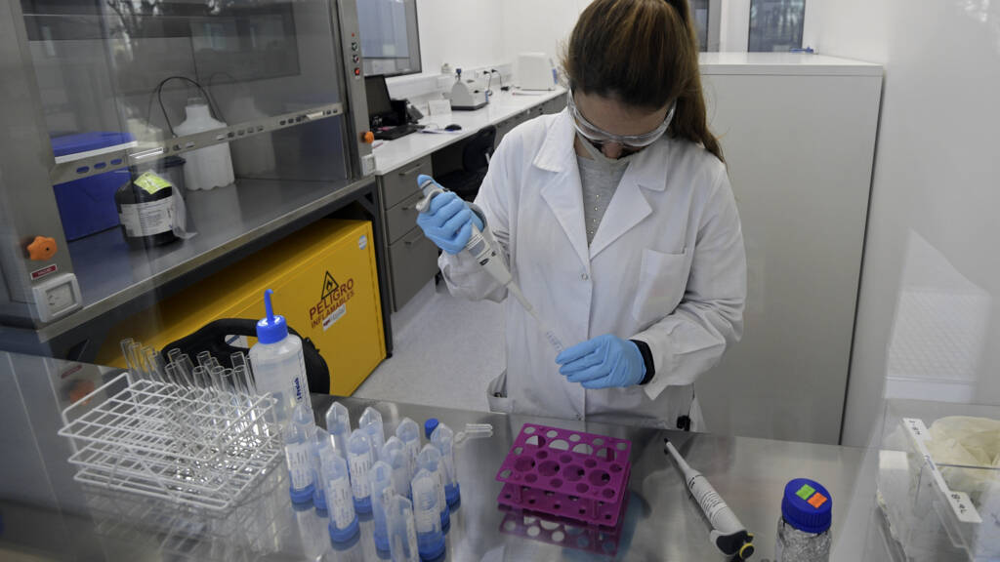

Eerste resultaten Oxford-vaccin: effectiviteit kan oplopen tot 90 procent
Problemen Koeman stapelen zich op, toch laat hij Messi en De Jong thuis
Houdt Ronald Koeman het nog wel vol bij FC Barcelona? Frenkie de Jong en Lionel Messi zijn toe aan rust.
Kabinet gaat transparantie eisen bij financiering moskeeën
Burgemeesters en het Openbaar Ministerie krijgen het recht op inzage in alle donaties van buiten de Europese Unie en de Europese Economische Ruimte.
'Overgang naar nieuw pensioenstelsel geremd door oude IT'
Veel pensioenfondsen werken met oude IT-systemen, en dat belemmert de overgang naar het nieuwe pensioenstelsel.
'Kabinet: basisscholen niet eerder open dan 18 januari'
De besmettingscijfers en de druk op de zorg zijn te hoog om aan de wens van de Tweede Kamer tegemoet te komen. Die wilde de scholen al op 11 januari openen.
'Aantal coronadoden in Vlaams verzorgingshuis gestegen na bezoek hulpsint'
Het dodental in Mol is in een week opgelopen van 13 naar 27.
'Vissers uit EU morgen weer welkom in Britse wateren'
Dit betekent dat de overgang naar de nieuwe situatie bijna rimpelloos verloopt, zegt directeur Visser van VisNed.